doco apresenta
01Engenharia de Flow
O sistema que transforma interesse em pacientes, pacientes em receita e experiência em indicação.
O sistema que transforma interesse em pacientes, pacientes em receita e experiência em indicação.
Construiu sua trajetória entre empreendedorismo, vendas e liderança comercial em projetos de alto padrão em São Paulo. Hoje, como fundadora da doco, ajuda empresas da saúde a crescer olhando toda a jornada do paciente.
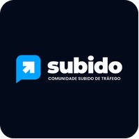
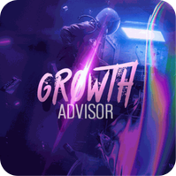
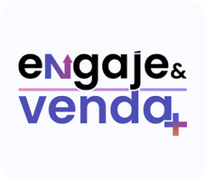
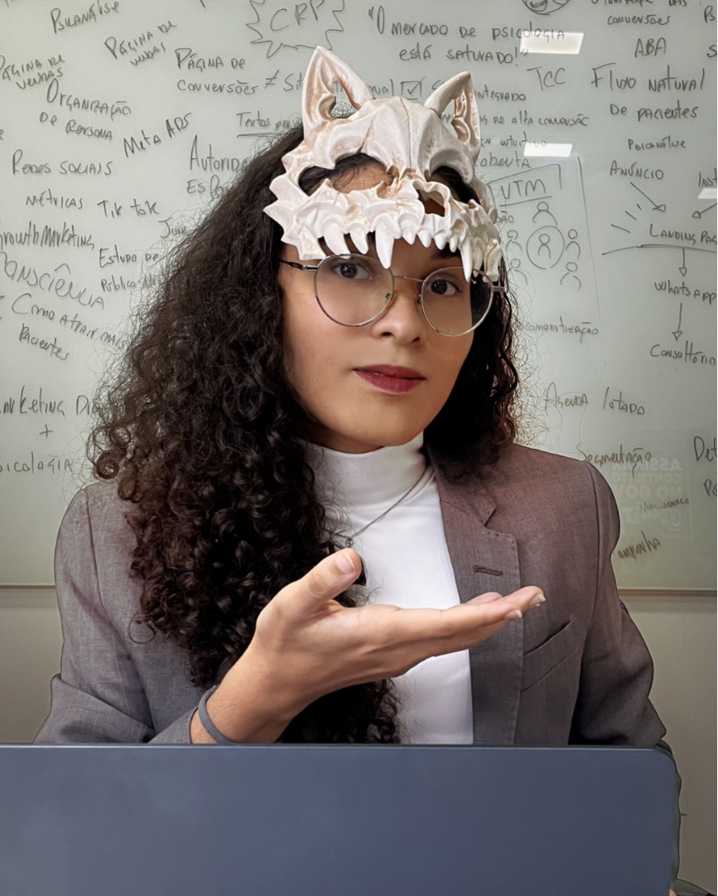
Construiu sua trajetória entre marketing, projetos sociais, audiovisual e empreendedorismo familiar, especialmente na área da saúde. Hoje, como fundadora da doco, ajuda empresas a crescer com mais clareza e previsibilidade.
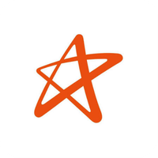
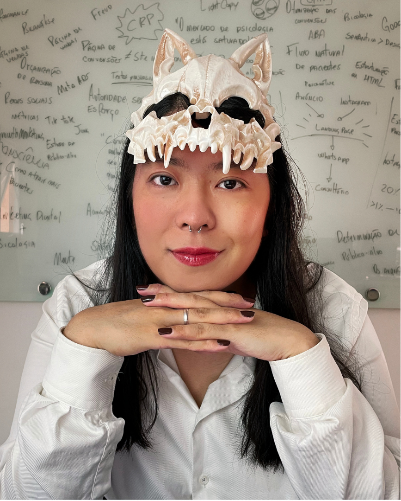
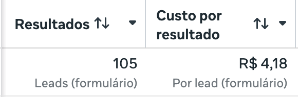
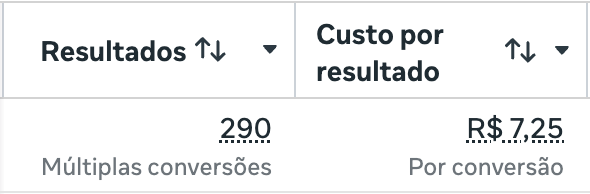
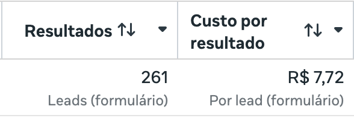
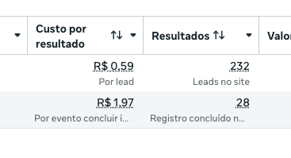
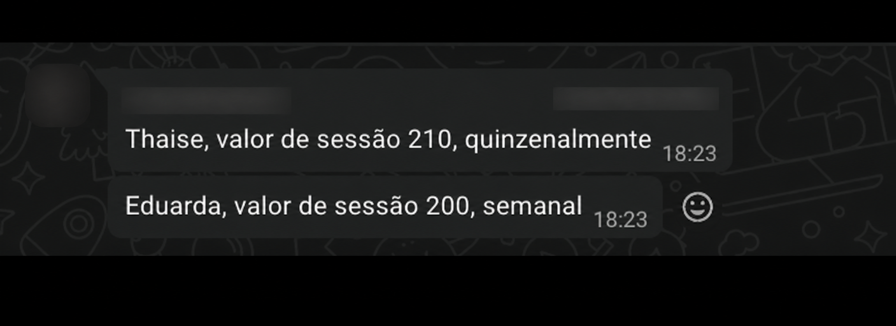
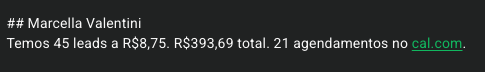
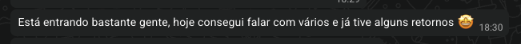
Apenas uma agência de tráfego pago.
Apenas uma agência de social media.
Uma agência de geração de demanda.
Aumentar a eficiência de fechamento.
Cada vez mais clínicas disputando atenção.
Muitos querem saber apenas o preço.
Pacientes trocam com facilidade.
A equipe não consegue converter.
Muitos caminhos e pouca clareza.
Campanhas genéricas ignoram a identidade de cada clínica.
O comportamento do paciente de saúde exige uma abordagem específica.
Focam no clique, não no processo que transforma interesse em paciente.
Não basta disputar a atenção dos mesmos pacientes da mesma forma que todo mundo.
Tráfego sem estrutura para converter.
Testes sem direção ou aprendizado.
Muitas frentes e nenhuma prioridade.
Meses bons e ruins sem explicação.
Oportunidades migram para a concorrência.
A operação depende demais de você.
Cinco pilares para transformar estratégia, aquisição, conversão e dados em um processo integrado de crescimento.
2 meses de entregas.
Criação de um fluxo e a base para você conseguir cobrar valores maiores.
Criação de um fluxo contínuo de pacientes qualificados.
Entendimento de onde estão os problemas e o que fazer para resolvê-los.
Entrega de vários processos validados.
Conquistando território de forma estruturada.
Entendemos a sua empresa para criar um plano personalizado.
Conhecer você, sua equipe e a estrutura clínica.
Traçar o plano de crescimento personalizado.
Analisar concorrência e paciente ideal.
Mapear carteira e histórico de conversões.
Encontrar oportunidades escondidas.
Uma auditoria para mapear as possibilidades e priorizar o que realmente move o projeto.
Precisa ser feito primeiro.
Aumenta o impacto do projeto.
Entra quando houver prioridade.
Começamos pelo diagnóstico, encontramos os gargalos e implementamos as soluções necessárias em cada etapa do Método CLARO.
Definir estratégia e objetivos.
Construir processos e ativos.
Colocar a solução em funcionamento.
Acompanhar os primeiros resultados.
Corrigir, documentar e avançar.
Não é apenas executar tarefas. É deixar uma operação funcionando, mensurável e preparada para evoluir.23
O que ficará pronto dentro da sua clínica.
Transformamos os problemas encontrados em uma lista de ações organizada por impacto, confiança e esforço.
Mapeamos a passagem do interesse até o fechamento para revelar onde as oportunidades estão sendo perdidas.
Uma proposta clara para a clínica deixar de parecer apenas mais uma opção.
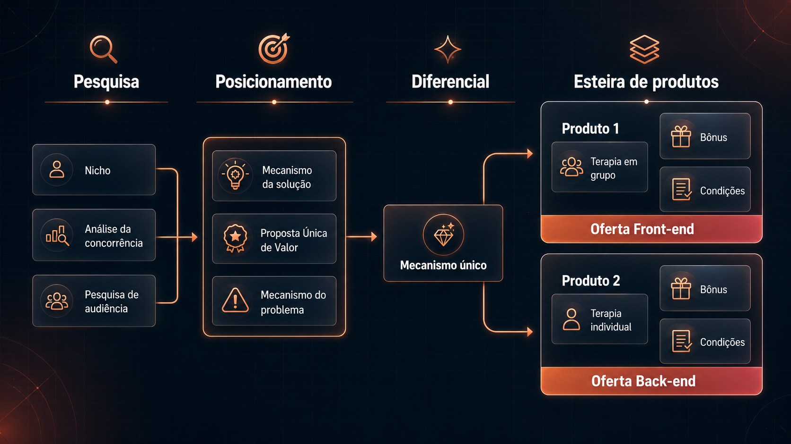
Uma página de vendas criada para um público e uma oferta específicos.
Referência de conversão entre 1% e 20%, conforme oferta, público e origem do tráfego.
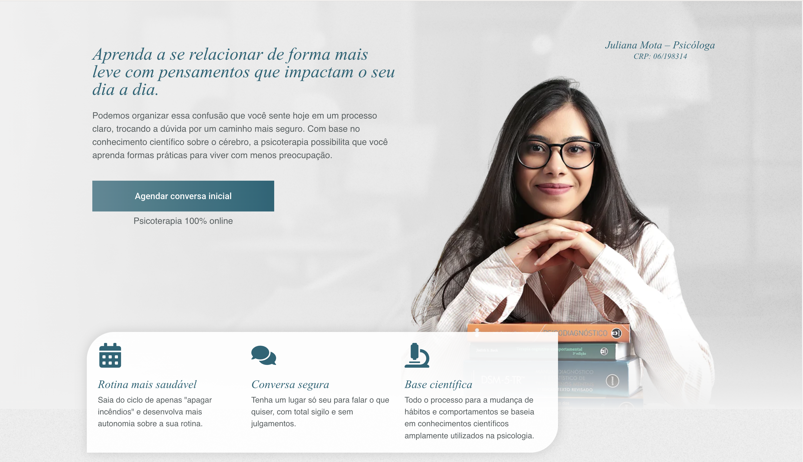
Um quiz estratégico para educar, qualificar e aumentar o nível de consciência do público.
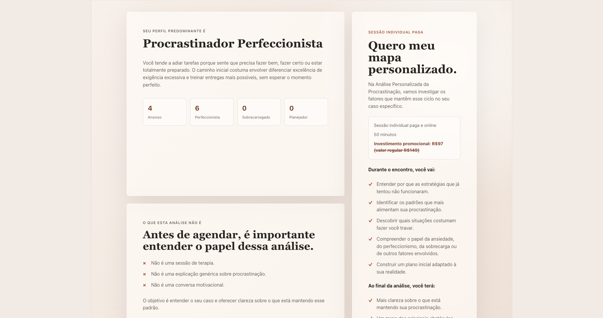
Organizamos o perfil da clínica para ampliar sua presença nas buscas locais.
4,9 ★★★★★ 127 avaliações
Psicologia clínica · Aberto até 20h
Uma estrutura de tráfego pronta para ativar campanhas e gerar oportunidades.
Aquisição estruturada para alcançar pessoas que já pesquisam por uma solução.
Campanhas, páginas, formulários, pixels e CRM organizados em uma jornada contínua.
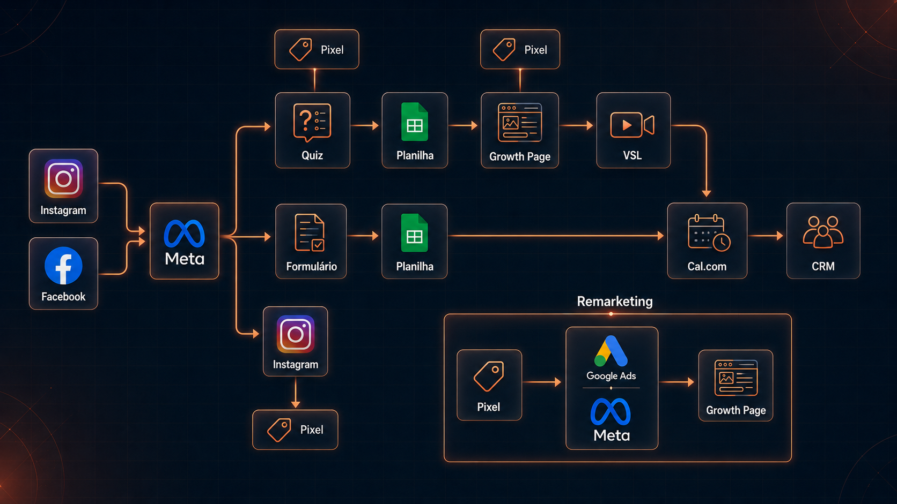
Um sistema para transformar temas estratégicos em novas ideias continuamente.
3 sinais de uma jornada quebradaRoteiro pronto · SEO definido
Por que seus leads somem?Roteiro pronto · SEO definido
Agenda cheia não é previsibilidadeRoteiro pronto · SEO definido
Os temas que aproximam a clínica das pesquisas do seu público.
Entenda os gatilhos, conheça estratégias práticas e descubra quando buscar ajuda especializada.
Métricas conectadas para entender o caminho completo até a conversão.
Dados bem estruturados podem reduzir o CAC em cerca de 30% quando orientam a otimização.
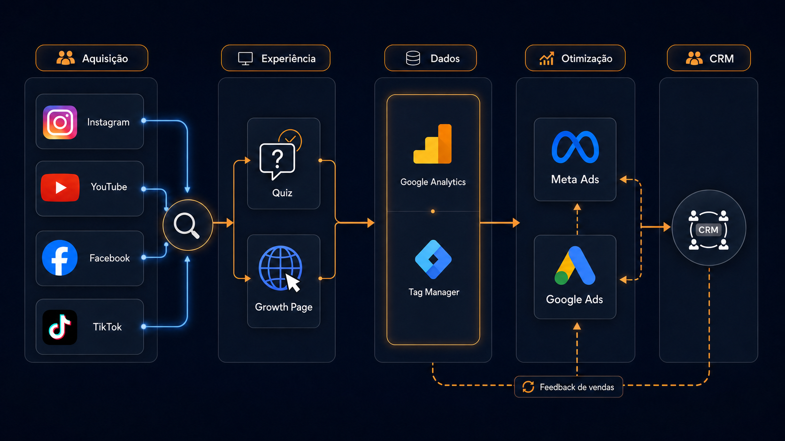
Todos os contatos e oportunidades dentro de um processo comercial visível.
A equipe preparada para conduzir oportunidades com clareza e consistência.
Olá! Queria entender como funciona a avaliação inicial.
Claro. Antes de te explicar, posso fazer duas perguntas para entender o seu momento?
Pode sim. Estou buscando ajuda para ansiedade no trabalho.
Entendi. Temos um atendimento indicado para esse contexto. Posso te mostrar o próximo horário disponível?
Não entregamos peças soltas. Entregamos uma operação conectada pelo Método CLARO.40
Este é o momento de abrir a conversa.
Aquilo que você recebe.
Aquilo que você paga.
A torre considera apenas entregáveis prontos, que permanecem com a clínica.
O valor recebido desse projeto é de:
ou 12x R$ 1.000,00
A economia reduz o custo comercial. Como agradecimento e incentivo, repassamos 100% do valor economizado pelo poder de decisão.
mediante três indicações
À vista: R$ 10.000
À vista: R$ 5.000
Como atrair pacientes particulares alinhados para dobrar o faturamento mantendo a mesma quantidade de horas trabalhadas.
Antes de captar mais pacientes, você precisa entender o que impede sua jornada atual de comunicar valor e converter melhor.
Construí minha trajetória entre empreendedorismo, vendas e liderança comercial em projetos de alto padrão em São Paulo. Hoje, como fundadora da doco, ajudo empresas da saúde a crescer olhando toda a jornada do paciente.
Não porque uma peça isolada funcionou, mas porque aquisição e atendimento começaram a trabalhar juntos.
Mais profissionais disputam a atenção de pacientes que ainda têm pouco critério para comparar serviços psicológicos.
O paciente encontra dezenas de profissionais parecidos em poucos minutos.
Muitas pessoas ainda não sabem avaliar abordagem, especialização ou qualidade clínica.
Sem clareza, a escolha acontece por preço, gênero, conveniência ou disponibilidade.
Todo mundo fala de acolhimento, escuta e transformação do mesmo jeito.
Quando o valor não fica claro, o preço vira o principal critério.
Mais de 20 atendimentos por semana e pouco espaço para crescer por volume.
Convênios, valores sociais e sessões entre R$ 60 e R$ 125 dominam a agenda.
Interessados perguntam o preço, somem e reforçam a ideia de que tráfego não funciona.
Não é falta de demanda. É uma jornada que ainda não comunica, filtra e converte valor.
Um sistema que conecta clareza de diferencial, visibilidade e processo comercial para transformar interesse em pacientes compatíveis com seu posicionamento.
O paciente precisa entender seu valor antes de comparar preço, encontrar você nos canais certos e receber uma condução clara até a decisão.
Cada etapa prepara a próxima. Quando uma delas falha, o paciente deixa a jornada antes de agir ou indicar.
O paciente percebe que você existe e reconhece um assunto importante para ele.
Sua mensagem desperta interesse porque parece relevante para o momento dele.
Ele compara opções, avalia segurança, abordagem, valor e compatibilidade.
Ele entra em contato, agenda e começa o atendimento.
Uma boa experiência gera continuidade, confiança e indicação.
Três pilares para aumentar a percepção de valor, atrair pacientes compatíveis com seu posicionamento e parar de perder oportunidades no caminho.
Cobrar mais não começa no preço. Começa na percepção de valor.
O objetivo não é colocar mais curiosos no WhatsApp. É gerar atenção qualificada.
A forma como você responde, qualifica e acompanha também comunica valor.
O paciente entende para quem seu trabalho é indicado e por que escolher você.
Sua publicidade atrai pessoas compatíveis com seu posicionamento, não apenas mais contatos.
O interesse recebe condução, acompanhamento e um próximo passo claro.
Os três pilares conectados em uma única jornada.
No diferencial, na publicidade ou na conversa?
Posicionamento, oferta, aquisição, página, atendimento, follow-up e conversão.
Eu vou analisar o seu momento, identificar o principal gargalo e mostrar o que precisa mudar primeiro.
Chame a pessoa que convidou você para este encontro e escreva: “Quero meu diagnóstico”.
Primeiro eu entendo seu momento e mostro a prioridade.
Sem receita pronta ou recomendação genérica.